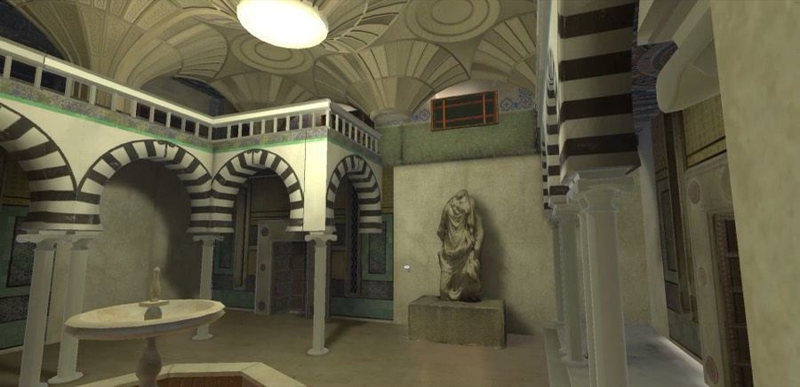
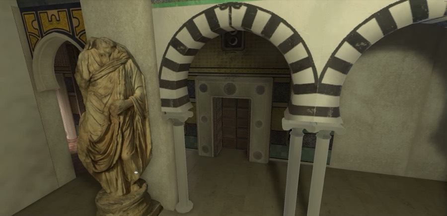
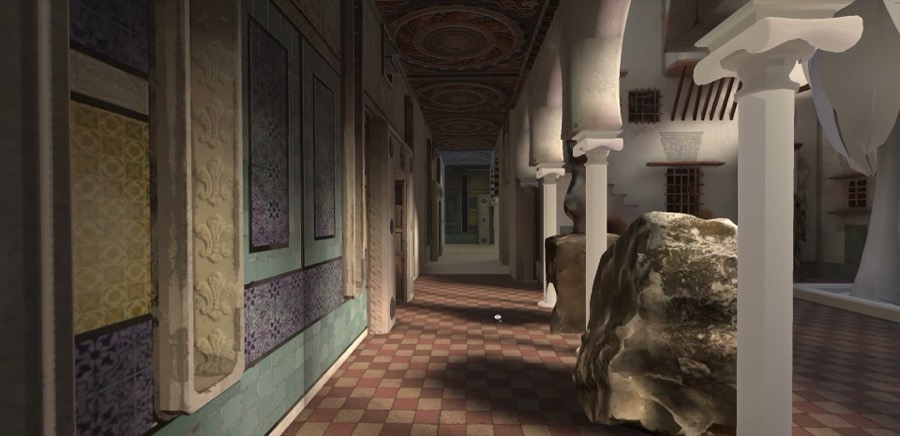
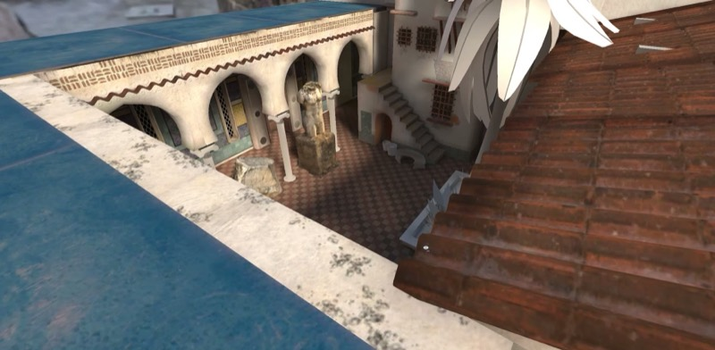
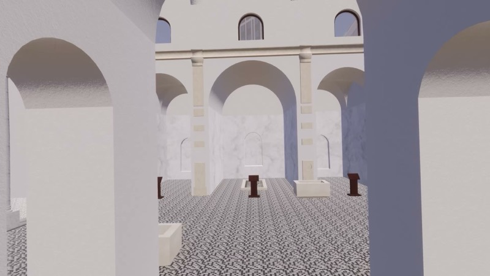

The first community-led virtual museum of Tunisian heritage. Every artifact inside was scanned in Tunisia by our volunteers and optimized by volunteers around the world; the rooms are modeled by hand so anyone in the community can build a new one. Built in Unity with photogrammetry and Gaussian splats. Still in progress, this is what it looks like today.
Built so far by Patrick Molen (the original room and the modular building kit every new room is assembled from), Ala (a wing inspired by the Roman baths of Dougga), Kristina Reyes (a furnished room), Cam Kania (narrative and thematic brief, experience design), Claire Natanek, Rachel West, Nick Kaufmann, Ana Beatriz Vega and Ray (models and optimization), coordinated on the Thursday call.
Walkthrough recorded in the Unity editor, March 2026.



Punic stelae, Roman statues and mosaics, doors and tilework from the medina, the same scans you find in our open archive, placed life-size.
Walls, arches and courtyards are built from a kit of pre-made pieces designed by Patrick Molen, so volunteers can puzzle together a new gallery without starting from scratch.
Ambient sound recorded at the real places, wind, footsteps, echoes, so each gallery feels different.
Nura, a guide character modeled in Blender, walks with you and tells the story behind each object. Her narrated tour, “Before It’s Gone,” is being written now.
Planned for Viverse so it runs cross-platform, in VR, and as a scroll-to-walk version in any browser for classrooms.
Lamps, pottery and plants modeled by volunteers furnish the rooms. Optimized scans keep it light enough for phones.
 January 2026
January 2026First courtyard and corridor blocked out; scanned statues placed.
 March 2026
March 2026Domed hall with striped arches, tiled floors, fountain and lighting.

March 2026Courtyard with pool, terraces and the sculpted canopy.

August 2026Second wing under construction, colonnade and galleries in greybox.
The domed hall, March 2026.
The second wing in greybox, August 2026.
See all 12 volunteer-made models Browse the scans on display